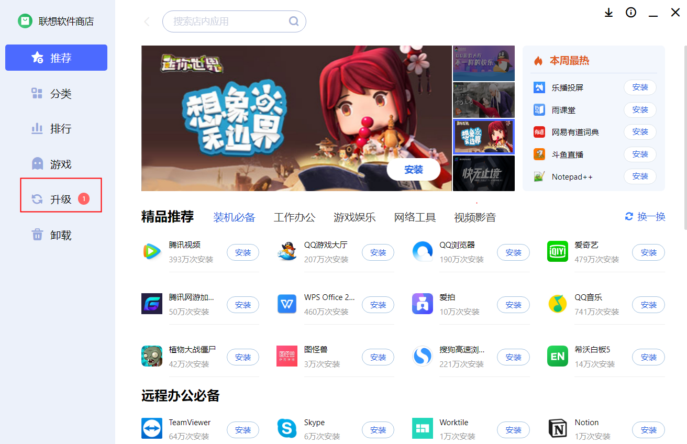
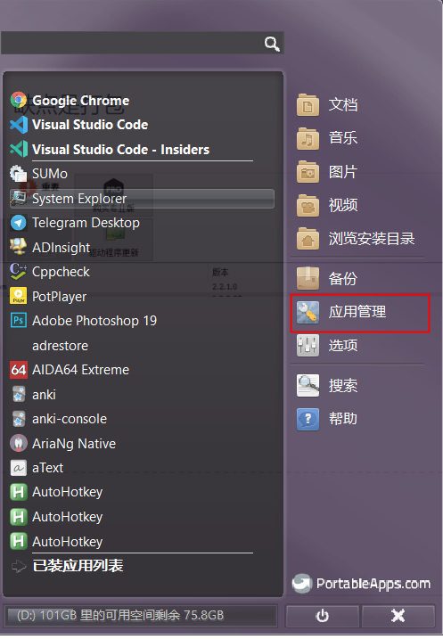
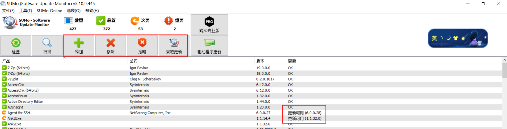

Win10下的软件批量更新策略
文章目录
1. 背景
曾经软件下载需通过百度搜索，容易被安装各种流氓软件，各种软件下载站点，也越来越流氓，各种倒流插件盛行。好在常用的软件不多，唯一需要保证的就是对已有软件的更新操作，一般软件都提供检查更新和自动升级的功能。
本文尝试梳理一下几种常见的批量更新软件方法，期望达到类似于手机应用商店的效果。
2. 更新策略
2.1 应用商店
Win10下有些UWP程序的更新可以在应用商店做，但MicrosoftStore基本上是个半残的状态，好用的软件不太多，而且受开发的平台限制，功能也不如传统的Windows桌面应用齐全，而且更新也不太及时，典型的如网易云音乐。
UWP软件的一些核心功能都在，甚至爱奇艺等UWP App在某一段时间内，因为无广告等特性，往往比桌面应用受欢迎，毕竟类似于白嫖的会员。
2.2 电脑管家
当前各个品牌的电脑都开发了自己的电脑管家，自带软件应用商店功能，一些常用的软件，如QQ、微信、输入法等，可以定期从该渠道更新，类似于手机的应用商店。
比如现在我用的联想电脑就有自己的应用商店。

官方的桌面应用商店，一般来说，比较规范，基本上都审核过，相对来说捆绑少，如果有也会有提示，并且应用商店也不排除付费的应用，相对来说比较齐全，对于经常使用的软件，建议采取此渠道。
2.3 绿色便携软件
绿色便携软件的升级相对来说比较复杂，因为很多无法利用软件自己的更新接口，否则就变为安装版本（可能会写注册表），与便携背道而驰了，更谈不上批量更新了。
绿色便携的来源有大致有如下几种
- 官方除了提供安装版本外，还提供免安装的zip包，如VSCode
- PortableApps按照特定格式打包的便携软件
- 通过工具（如UniExtract）解压出的绿色软件
- 个人基于爱好而破解的绿色软件
便携软件的定位是免安装，迁移数据比较方便。如下渠道分析，如何批量更新。
2.3.1 PortableApps
PortableApps提供软件管理功能，安装后可以对安装的便携软件，只需要点一点，即可定期进行升级。因为需要打包，制作成专门的格式，一般比官方的有一定的时延，但对于热门的应用，如Chrome、Firefox还是很快的

PortableApps 的软件为了兼容性（U盘），某些软件只提供X86 32Bit的软件，只收录免费软件、开源软件。当然也有少量的基础功能免费，Pro功能收费的软件，如下面介绍的 SUMo。
2.3.2 SUMo
SUMo 扫描某个目录下的软件，获取软件的版本，并与在线服务器的版本进行比对，找出潜在需要更新的软件。如下图所示

基本的检测功能是免费的，如果需要一件升级，还需要Pro版本，有使用过朋友可以说一说。
2.4自主更新
支持的便携软件是有限的，而且是国外开发的，对国内的软件支持不是很好。
国内有网站应用PortableApps提供的相关技术，产生了自己便携软件，如 PortableAppC（已经倒闭了）。最近有家 ProtableAppK通过搭建会员体系，提供高质量的应用软件下载，是一个比较好的思路，但未提供自动升级的接口，可以按照需求自主下载更新。
2.5 scoop 更新
scoop 是Windows下的基于命令行的管理软件，类似于Ubuntu下的apt 和Centos下的yum工具。
我现在已经迁移到这个平台下了，其绿色的不影响系统参数的理念与我不谋而合。通过添加热门的仓库列表，可以实现常用软件的接入。
2.6 WSCC 更新
WSCC（Windows System Control Center） 是一个管理软件，可以更新，升级某些特定源下的软件。
官方提供多种格式的下载链接，如绿色版，便携版等。
可以了多种源工具的工具下载，并有区分X64，在当前架构下，一般请选择X64Bit的软件进行安装。
3. 总结
在当前Win10的架构下，升级或重装系统的意义不是很大，所以便携或绿色软件并没有那么重要，通过官方的应用商店批量升级是一个很好的方式，没有必要那么折腾自己，毕竟用电脑解决问题才是核心，而不是单纯的玩电脑。作者只是已经累计了好多好玩的应用，有些历史数据的存量，因为升级系统懒得再次安装而已。
祝大家玩得开心。
文章作者 Rayan
上次更新 2020-02-29